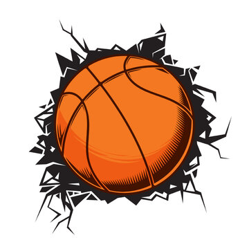

Hi, I'm John Great H. Delfin, a 21-year-old student at FEU Tech, currently studying BSIT Animation and Game Development. I'm also a UI/UX Designer from Manila, Philippines, working in web development and print media.
I enjoy turning complex problems into simple, beautiful, and intuitive designs.
My job is to build your website so that it is functional and user-friendly, while also being visually attractive.
As a BSIT Animation and Game Development student, I apply creative techniques and interactive elements to enhance both design and user experience.
Moreover, I added a personal touch to your product to ensure it's eye-catching and easy to navigate.
My goal is to communicate your message and identity in the most innovative and engaging way possible.
I’ve had the opportunity to create web designs for many well-known brand companies.
What i'm doing
Student
The most modern and high-quality design made at a professional level.
Web development
High-quality development of sites at the professional level.
Mobile apps
Professional development of applications for iOS and Android.
Photography
I make high-quality photos of any category at a professional level.
Hobbies

Basketball
I really enjoy playing basketball—it’s one of the things I’m most passionate about outside of my work and studies. Whenever I’m on the court, I feel a different kind of energy and focus. It helps me clear my mind, especially when I’m stressed or overwhelmed with school or design work. I’ve been playing basketball since I was young, and it’s something that has always stayed with me. I love the competitiveness of the game, how it pushes me to improve my skills, and how it teaches me discipline and patience. Whether it’s shooting around by myself or playing a full game with friends, I always find joy in every moment. Basketball helps me stay active and healthy, but more than that, it helps me build better habits in life—like teamwork, communication, and determination. It’s also a great way to bond with others and make new friends. Sometimes I even get design inspiration from basketball, like how plays are structured or how teams communicate on the court. It may be just a sport to some people, but to me, basketball is something that keeps me motivated and helps me grow not only as a player but also as a person.
Volleyball
I also really enjoy playing volleyball—it's one of the sports that I’ve grown to love over time. There’s just something about the game that makes it exciting and challenging at the same time. Whether I’m playing on the court with friends or during school events, I always look forward to the adrenaline rush that comes with every set, spike, and rally. Volleyball taught me how important teamwork and communication are because you can’t win the game alone—you have to trust your teammates and work together as one. I enjoy the physical aspect of it too; it keeps me active and helps me stay fit. At the same time, it pushes me to stay focused, especially in fast-paced moments when every point matters. Playing volleyball also gives me a break from my usual routine of studying and working on design projects. It helps me find balance between academics, creativity, and physical activity. It’s a great way for me to relax, have fun, and challenge myself in a different way. Every time I play, I feel more confident, more connected with others, and more inspired to keep improving—not just in the game, but in life overall.
Tennis
Playing tennis is something I truly enjoy, and it has become one of my favorite ways to spend my free time. What I love most about tennis is that it’s not just a physical game—it’s also very mental. Every match feels like a personal challenge where I have to stay focused, think ahead, and react quickly. It helps me clear my mind, especially when I’ve been sitting for hours working on designs or studying for my BSIT Animation and Game Development course. Whether I’m practicing my serve, hitting volleys, or playing a friendly match, I always feel a sense of excitement and energy when I’m on the court. It’s a great workout and helps me stay active and healthy, but more than that, it teaches me discipline, patience, and persistence. Since tennis is mostly played one-on-one, it also pushes me to take responsibility for every move I make, which is something I’ve learned to apply even in my personal and academic life. The feeling of improvement after each game is really motivating, and I enjoy seeing how far I’ve come every time I play. Tennis is more than just a sport to me—it’s a way to relax, to stay sharp, and to enjoy the balance between competition and fun.
Video Games
Playing video games has always been one of my favorite hobbies, and it’s something I genuinely enjoy doing whenever I have free time. Gaming isn’t just about entertainment for me—it’s a way to relax, have fun, and even get inspired creatively, especially since I’m studying BSIT Animation and Game Development. I love exploring different types of games, from casual and creative ones to fast-paced shooters and story-driven adventures. One of the games I enjoy the most is Roblox because of its creativity and variety. I like how it lets players create their own worlds and experiences, which connects closely to what I do as a game development student. Another game I’m really into is Valorant—I enjoy the teamwork, the strategy, and the intense matches. It keeps me sharp and focused. On the Xbox, I love playing games like GTA 5, Devil May Cry, NBA 2K14, and Watch Dogs. Each of them gives me a different experience. GTA 5 and Watch Dogs feed my love for open-world environments and storytelling, while Devil May Cry challenges my reflexes and skills with its fast-paced combat. NBA 2K14 is my go-to when I want to enjoy basketball in a different way, combining sports with gaming. Video games have helped me appreciate good game mechanics, visuals, and narrative design, which is really helpful in my course. It’s not just a hobby for me—it’s something that inspires my creativity and fuels my passion for becoming a game developer someday.
John Great H. Delfin
Hi, I'm John Great H. Delfin, a 21-year-old student at FEU Tech, currently studying BSIT Animation and Game Development. I'm also a UI/UX Designer from Manila, Philippines, working in web development and print media.
I enjoy turning complex problems into simple, beautiful, and intuitive designs.
Clients
Resume
Education
Aurora A. Quezon Elementary School
2014 — 2017
I studied at Aurora A. Quezon Elementary School from 2014 to 2017. During my time there, I built a strong foundation in academics and developed good study habits. It was also where I began to discover my interests, made great friends, and experienced many memorable school activities that helped shape who I am today.
Adamson University
2019 — 2021
I studied at Adamson University from 2019 to 2021. During those years, I gained meaningful experiences that helped me grow both academically and personally. The university provided a supportive environment where I was able to improve my skills, meet new people, and build a strong foundation for my future studies.
Adamson University
2021 — 2024
I attended Adamson University Senior High School from 2021 to 2024. My time there was a valuable part of my academic journey, where I deepened my knowledge, especially in my chosen strand. I also developed important life skills, built lasting friendships, and prepared myself for the challenges of college and beyond.
Experience
Creative director
2021 - 2023
My journey to becoming a Creative Director started with a deep passion for design and storytelling. Over the years, I honed my skills in visual design, branding, and user experience through hands-on projects, studies, and freelance work. I gradually took on leadership roles in creative teams, where I learned to guide concepts from ideas to execution. Through dedication, continuous learning, and a clear creative vision, I earned the opportunity to lead as a Creative Director—bringing ideas to life and helping brands connect with people in meaningful ways.
Art director
2024 — 2025
I became an Art Director through years of experience in design, starting with small projects that helped me build a strong creative foundation. As I worked on more visual campaigns and collaborated with different teams, I developed an eye for detail, composition, and storytelling. My passion for creativity, along with my ability to lead and bring ideas to life visually, eventually opened the door for me to step into the role of Art Director—overseeing design concepts and guiding teams to deliver powerful visual work.
Web designer
2025 — 2028
I became a Web Designer by combining my passion for creativity with my interest in technology. I started by learning the basics of HTML, CSS, and design tools like Figma and Adobe XD. Over time, I practiced building websites, improving my skills in layout, responsiveness, and user experience. As I took on more projects, I developed a strong eye for clean, modern design and effective functionality. My dedication and hands-on experience eventually led me to take on the role of Web Designer, where I now bring digital ideas to life with both style and purpose.